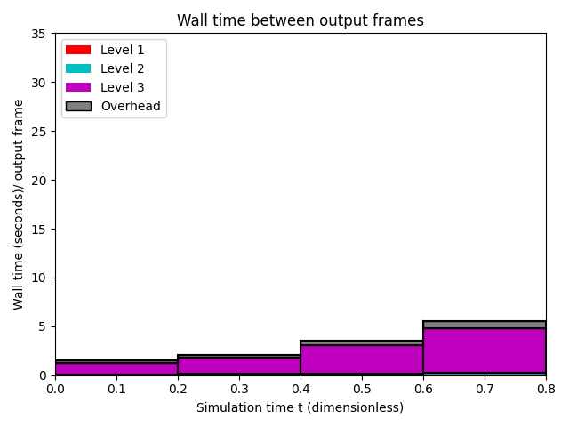

Datetime: 2021-09-21 14:17 From: /Users/rjl/clawpack_src/clawpack_master/amrclaw/examples/euler_2d_quadrants/_output
============================== Timing Data ==============================
Integration Time (stepgrid + BC + overhead)
Level Wall Time (seconds) CPU Time (seconds) Total Cell Updates
1 0.237 0.240 0.152E+06
2 4.349 11.960 0.765E+07
3 88.114 262.496 0.167E+09
total 92.700 274.696 0.175E+09
All levels:
stepgrid 91.894 272.575
BC/ghost cells 0.744 2.053
Regridding 0.538 1.126
Output (valout) 4.268 4.205
Total time: 97.816 280.586
Using 3 thread(s)
Note: The CPU times are summed over all threads.
Total time includes more than the subroutines listed above
Note: timings are also recorded for each output step
in the file timing.csv.
clock_rate = 1000000000 per second, count_max = 9223372036854775807
clock_start = 1632258933455373000, clock_finish = 1632259031281997000
=========================================================================
